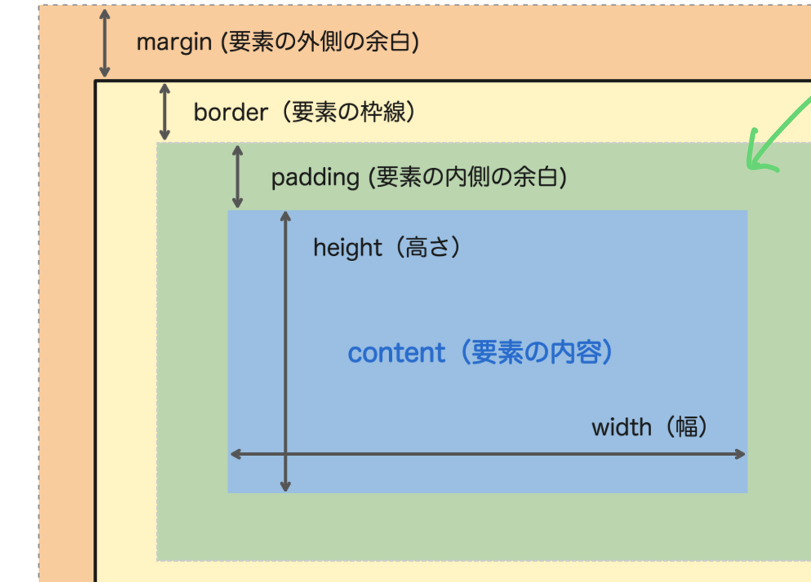
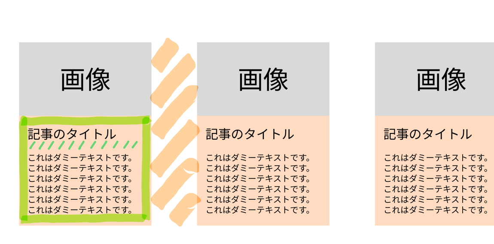
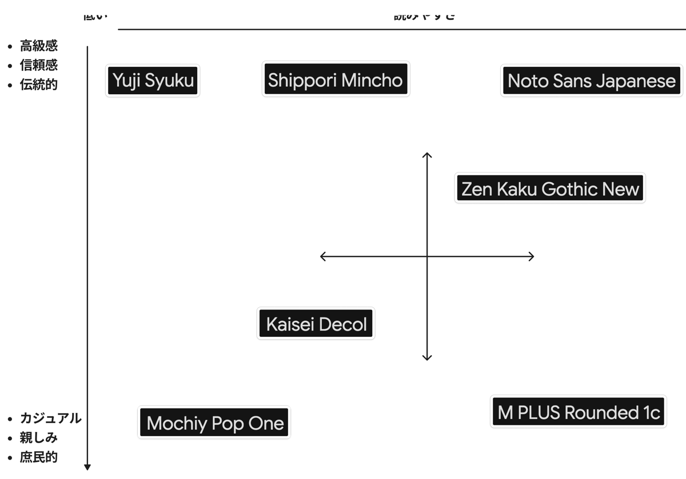

訓練校｜全6時間の集中授業
テーマは 「ボックスモデル」 と 「タイポグラフィ（文字の見せ方）」。
かんたんに言うと 「すべての要素は “中身→内側余白→線→外側余白” の4層の箱でできている」「box-sizing: border-box はサイトを作る限り必ず書く」「行間・文字サイズ・太さ・字間で読みやすさが激変する」という話です。
ブロック要素は幅を指定しないと、親 → その親 → … → 最終的に body と同じ幅になります。
テキストが短くても、箱は親いっぱいに広がっている（DevToolsで水色の領域を見ると一目瞭然）。
逆にインライン要素（span等）は、テキストの分だけの幅。だから文中の一部だけ色を変えるのに <span> が使えます。
ブロック化。幅高さ指定可、後ろで改行。
インライン化。幅高さ指定不可、改行なし。
いいとこ取り。幅高さ指定可＋横並び。
inline-blockで横並びにして収まらず下に落ちる現象＝「カラム落ち」。
height をピクセル指定するのは基本NG。書かないのが安全。
中の文章量が指定した高さを超えるとテキストが箱からはみ出してレイアウトが崩壊します。height の初期値は auto（中身に合わせて自動で伸びる）。慣れるまで height はいじらないのが鉄則です。
HTMLのすべての要素は4層の箱でできています。
中身（content）→ 内側の余白（padding）→ 線（border）→ 外側の余白（margin）。プレゼント箱で例えると「商品→緩衝材→箱→ラッピングの隙間」。

| 層 | 役割 | 透明？ |
|---|---|---|
width/height | 中身のサイズ | — |
padding | 内側の余白（要素の背景色がつく） | ❌ |
border | 線（太さ 種類 色） | — |
margin | 外側の余白（要素と要素の間） | ✅ 透明 |
CSSの1行目に必ず：* { box-sizing: border-box; }
初期値（content-box）だと width:200px と書いても、padding と border が足されて実際は240pxになってしまう（計算がズレる）。border-box にすると、paddingやborderを含めてちゃんと200pxに収まります。
* { box-sizing: border-box; } /* CSSの1行目に！ */
| 値の数 | 書き方 | 意味 |
|---|---|---|
| 1値 | padding: 16px; | 4方向ぜんぶ16px |
| 2値 | padding: 16px 8px; | 上下16px、左右8px |
| 4値 | padding: 8px 32px 16px 4px; | 上→右→下→左（時計回り） |
border の書き方：border: 4px solid #1a3a5c;（太さ・種類・色）。種類は solid（実線）/ dashed（破線）/ dotted（点線）。
今日習ったボックスモデル＋display＋余白を全部使って、横並びカードを作る演習。
class="item box-first" のようにクラスを2つつける。共通（幅・余白）は .item で1回、色だけ .box-first で個別に。「ここ同じだな」と気づいたら共通化のチャンス。

教科書18p。美しく読みやすいサイトの基本。和文＝明朝/ゴシック、欧文＝セリフ/サンセリフ。
p { line-height: 1.8; } /* 1.5 = 150% */
デフォルト1.5、欧文1.2、和文1.5〜2が読みやすい。先生おすすめ1.8。
長文で一部だけ大きくすると読み飽きない。デザインの対比原則と同じ。
.strong { font-weight: bold; }
ただしそのフォントが太字を持っていないと効かない。Google Fontsなら問題なし。
0.05em 前後が自然。取りすぎると犯罪予告の手紙風になるので注意（笑）。
| 値 | 意味 |
|---|---|
left | 左揃え（デフォルト） |
center | 中央揃え |
right | 右揃え |
justify | 両端揃え（雑誌風） |
教科書の図を参考に、自分用のフォント表をFigJamで作るのが演習。一生使える資産になります。

Google Fonts でフォントを探し、上のマップに配置→スクショ→FigJamに貼る。5〜10種類は揃える。
| 用語 | 意味 |
|---|---|
| ボックスモデル | content/padding/border/margin の4層構造 |
| padding | 内側の余白（背景色がつく） |
| border | 線（太さ 種類 色） |
| margin | 外側の余白（透明） |
| box-sizing: border-box | width指定にpadding/borderを含める。必須 |
| display | block/inline/inline-block の切替 |
| line-height | 行間。和文1.5〜2推奨 |
| font-weight | 文字の太さ（bold等） |
| letter-spacing | 字間（0.05em程度） |
| text-align | テキスト揃え（left/center/right/justify） |
* { box-sizing: border-box; }ブロック要素は幅・高さをCSSで指定できる。指定しないと親要素の幅いっぱいになる。今日これだけでも覚えてくれってぐらい大事。
height は慣れるまであんまりいじらないぐらいの気持ちで。むしろ書かない方が安全。box-sizing: border-box はウェブサイトを作る限り絶対書くもの。お決まりで覚えて。「ここ同じで書けるな」って思ったら、それはチャンス。共通設定として1箇所にまとめるのが賢い。